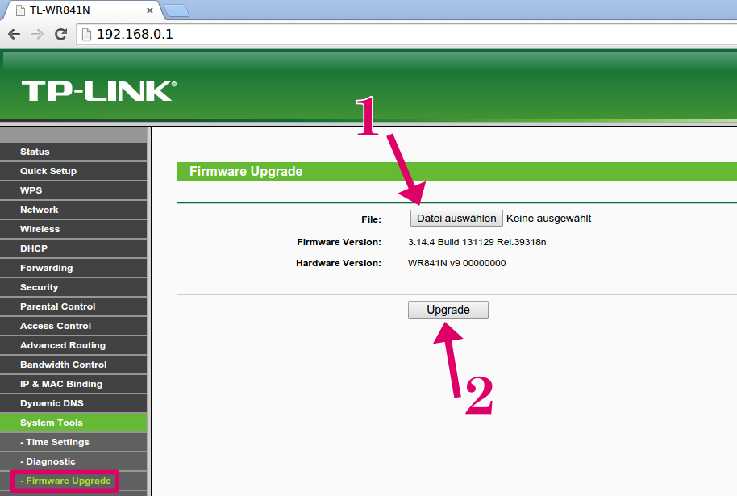
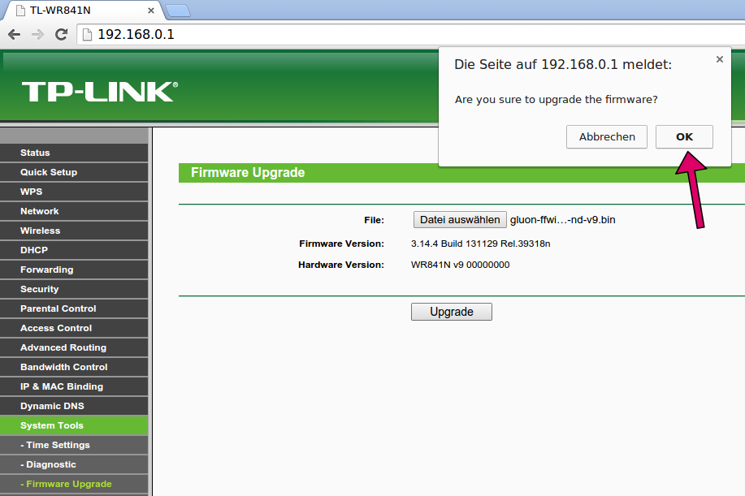
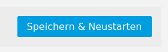

Du benötigst einen Router, der von der Freifunk Firmware unterstützt wird. Wähle ein unterstütztes Router-Modell aus unserer Firmware-Tabelle. Wenn du dir nicht sicher bist, welches Modell für dich geeignet ist, wähle eines der empfohlenen Modelle.
Die Einrichtung eines Freifunk-Knotens ist nicht schwer, das kann jeder! Alle Schritte, vom Router-Kauf über das Firmware-Flashen bis zum fertigen Freifunk-Knoten auf einen Blick:
-
Schritt 1: Router auswählen und kaufen
-
Router auswählen
-
Router kaufen
{% include get_router.html %}
-
-
Schritt 2: Firmware einspielen
-
1: Firmware-Datei herunterladen
Viele Router-Modelle gibt es in unterschiedlichen Hardware-Revisionen (Versionen).
Wichtig Aus diesem Grund ist es sehr wichtig zu ermitteln um welche Hardware-Revision es sich bei deinem Router handelt, damit du auch die richtige Firmware herunterladen kannst.
Modellbezeichnung (1) und die Hardware-Revision (2) stehen auf der Rückseite deines Routers.
Lade nun die passende Firmware für die Erstinstallation von unserer Firmware Seite herunter.
-
2: Router mit dem Computer verbinden
Nun ist es Zeit die Antennen (falls vorhanden) an deinen Router zu schrauben und diesen mit deinem Computer zu verbinden.

Bitte schraube zuerst die Antenne(n) (1) an die Gewindestecker des Routers (2), den du anschließend mit dem beiliegenden Steckernetzteil (3) mit Strom versorgst. Verbinde danach den Router und deinen Computer mit dem beiliegenden Netzwerkkabel (4).
Das Netzwerkkabel muss in den sogenannten LAN-Port (Netzwerkbuchse) am Router angeschlossen werden. Bei den TP-Link Geräten sind das meistens die gelben Buchsen. In der Regel sind die Buchsen aber auch entsprechend mit LAN bzw. WAN (Internetbuchse) gekennzeichnet.

Hier siehts du z.B. die Ports eines TP-Link TL-WR841ND. Die gelben Buchsen sind für LAN (ja, hier reinstecken) und die blauen für WAN.
-
3: Administrations-Webseite aufrufen
Um die Freifunk Firmware einzuspielen benötigst du auf deinem Computer einen Internet Browser und die passende Firmware Datei, die du schon unter 1 heruntergeladen hast.
Öffne in einem Internet Browser deiner Wahl die Adresse {{ site.data.ffmwu.firmware.internal_ip }}. Die neueren Geräte sind unter dieser Adresse erreichbar. Falls das nicht funktionieren sollte hast du evtl. ein älteres Modell erwischt:
- Probiere http://192.168.1.1 aus
- Suche auf der Rückseite des Geräts nach Hinweisen
- Schaue im Handbuch nach
Wenn das funktioniert hat, musst du dich nun mit Benutzernamen und Passwort anmelden. In den meisten Fällen ist das:
- Benutzername: "admin"
- Passwort: "admin"
Sollte das nicht funktionieren, schaue im Handbuch oder auf der Rückseite des Routers nach oder setze das Gerät mit dem Reset-Knopf auf die Werkseinstellungen zurück und versuche es anschließend erneut.
-
4: Firmware installieren

Einstiegsseite des TP-Link Routers mit Original Firmware. Folge dem Link "System Tools".

Das Untermenü "System Tools" öffnet sich. Wähle den Unterpunkt "Firmware Upgrade".
Zuerst die Firmware Datei auswählen (1), die zuvor heruntergeladen wurde. Danach mit einem Klick auf "Upgrade" (2) den Prozess starten.

Du musst einmal bestätigen, dass du die neue Firmware wirklich einspielen willst.
Fast geschafft. Die Freifunk Firmware wird nun auf deinen Knoten geladen und installiert. Bitte ziehe auf keinen Fall das Strom- oder Netzwerkkabel heraus. Das Gerät wäre anschließend defekt.
-
5: Fertig - Router startet neu

Warte bis der Prozess vollständig abgeschlossen ist.
Nachdem die Firmware fertig eingespielt ist, startet dein Freifunk-Knoten neu. Nach ca. einer Minute ist dein Knoten bereit für die Konfiguration.
In der Regel wird für die Einrichtung eine andere IP-Adresse verwendet. Damit dein Rechner/Laptop automatisch eine neue IP-Adresse erhält ziehe das Netzwerkkabel an deinem Rechner/Laptop einmal raus, warte einen kurzen Moment und stöpsle es wieder ein. Rufe danach die Adresse {{ site.data.ffmwu.firmware.gluon_config_ip }} in deinem Browser auf und folge den Anweisungen unter Schritt 3: "Knoten einrichten".
-
-
Schritt 3: Knoten einrichten
-
1: Konfigurationsseite öffnen
Rufe die folgende URL in einem Browser auf: http://192.168.1.1
 Config-Mode eines Freifunk-Knotens
Config-Mode eines Freifunk-Knotens
-
2: Knotenname
Als Erstes gibst du deinem Knoten einen Namen. Nimm einen, der dir gefällt und der vielleicht ein wenig über den Standort des Knotens aussagt. Bitte beachte, dass keine Sonderzeichen außer der Bindestrich im Namen erlaubt sind. Wenn du ein Leerzeichen brauchst, verwende einen Bindestrich.
-
3: Mesh-VPN
Wenn keine anderen Knoten in WLAN Reichweite sind, setze nun einen Haken hinter "Mesh-VPN aktivieren", um eine verschlüsselte Verbindung über deinen Internet-Router zu den Freifunk-Servern herzustellen. Die Freifunk-Server verbinden deinen Freifunk-Knoten über das Internet mit allen anderen Teilen des Freifunk-Netzes, die nicht über WLAN erreicht werden. Wenn diese Option nicht aktiviert wird kann dein Knoten nur über einen weiteren Freifunk Knoten, der in WLAN Reichweite steht, eine Verbindung zum Freifunk-Netz aufbauen. Der Zugang zum Internet ist dann nur möglich, wenn mindestens bei einem der erreichbaren Knoten diese Option aktiviert ist.
Optional kannst du die Bandbreite, die von deinem Internet-Anschluss maximal benutzt werden soll, fest limitieren. Willst du die Bandbreit limitieren, setze den Haken "Mesh-VPN Bandbreite begrenzen" und trage in die beiden Felder darunter die gewünschten Limits ein. Die Minimalwerte sind 1000 im oberen und 100 im unteren Feld.
-
4: Standort
Wenn du möchtest, dass du und andere Mitmenschen den Standort deines Knotens in der Freifunk-Karte sehen können, dann musst du hier ein Häkchen setzen und in die rot unterlegten Felder Geo-Koordinaten eintragen. Die erforderlichen Werte für den Breiten- und Längengrad kannst du auf unserer Freifunk-Karte mit Hilfe des Stecknadel Buttons ermitteln. Die Geo-Koordinaten werden dir in einem kleinen Popup-Fenster angezeigt.

-
5: Kontakt
Um einen Knoten-Betreiber erreichen zu können, braucht die Gemeinschaft eine Kontakt-Möglichkeit. Du kannst dazu in diesem Feld beispielsweise eine E-Mail Adresse eintragen oder einen Namen, der dir von anderen aktiven Freifunkern zugeordnet werden kann. Beachte, dass die Kontaktdaten, die du hier eingibts, öffentlich zugänglich sind. Wenn Du magst, kannst du hier mehrere Werte eintragen. Trenne diese bitte mit einem Komma. Wenn du unsicher bist, dann lass dieses Feld leer. Du kannst das später noch ändern.
-
6: Knoten bekanntmachen
Klicke auf Speichern & Neustarten.

Die nun erscheinende Seite fasst zusammen, was du als Nächstes tun solltest. Hast du in Schritt 3 das Mesh-VPN aktiviert, zeigt die Seite wie in der Abbildung einen eingerahmten Block an, welcher deinen Knoten Namen und einen VPN-Schlüssel enthält. Sende den Inhalt dieses Blocks an {{ site.community.mail_keys }}. Wenn du auf die als Link angezeigte E-Mail Adresse klickst öffnet sich automatisch dein E-Mail Programm mit einer neuen E-Mail, die alle erforderlichen Werte schon vorausgefüllt hat.
Es kann eine Weile dauern, bis dein Knoten die Verbindung zum Freifunk-Netz aufbaut, da der Schlüssel manuell eingetragen werden muss.
Hast du Mesh-VPN nicht aktiviert, werden diese Daten nicht angezeigt und du brauchst keine Mail versenden. Wenn du möchtest, kannst du dich und deinen neuen Knoten aber trotzdem gerne auf unserer Mailingliste {{ site.community.mail_discussion }} bekannt machen.

-
7: Knoten ans Internet anschließen
Nun kannst du den Knoten ans Internet anschließen. Dazu musst du das LAN-Kabel auf der Rückseite deines Knoten umstecken: Bisher hattest du das Kabel im LAN-Port (gelb). Jetzt muss es in den WAN-Port (blau). Verbinde dann noch das andere Ende des Kabels mit deinem Internet-Router und dein neuer Freifunk-Knoten ist am Netz.

Wie unter Schritt 6 schon beschrieben brauchst du deinen Freifunk-Knoten nicht mit deinem Internet-Router zu verbinden, wenn du ihn als "Mesh-Only Knoten" betreiben willst. Du hast z.B. schon einen Freifunk-Knoten, der mit deinem Internet-Router verbunden ist und möchtest das Freifunk Signal erweitern.
-
Fragen?
Solltest du Fragen oder Probleme haben, kannst du dich gerne an uns wenden. Kontakt-Möglichkeiten sind ganz unten auf dieser Seite zu finden.
-